Detailed Description
Detailed Description
Closed crankcase ventilation
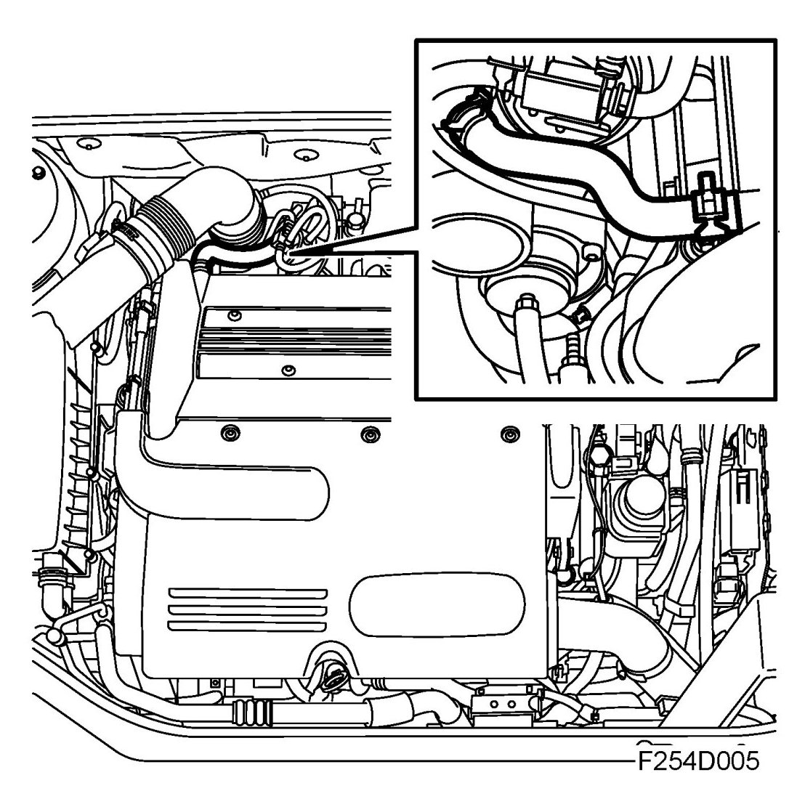
The combustion gases passing the piston rings are collected in the crankcase and must be discharged from the engine through the crankcase ventilation. This is firstly to prevent excessive pressure in the crankcase and secondly to vent the water vapor and hydrocarbons from combustion. As the crankcase gases contain hydrocarbons, they cannot be discharged into the atmosphere but must be recycled into the cylinders to be combusted. The engine crankcase ventilation system is therefore a closed system.
The crankcase gases formed are first passed to an oil trap integrated in the timing cover where the gases are separated from the oil. The oil runs back to the engine oil pan while the gases are passed to the engine cylinders.
The crankcase ventilation system works in two different ways, depending on whether the engine is working at low or high load.
Function, low engine load
At low engine load, the pressure in the intake manifold is relatively low and a strong negative pressure predominates. The crankcase gases are passed from the oil trap via a duct in the cylinder head to a check valve fitted in the intake manifold. From the check valve the gases are passed through a duct which opens into the intake manifold. In the intake manifold the crankcase gases are mixed with the intake air and passed into the engine cylinders where they are burned.
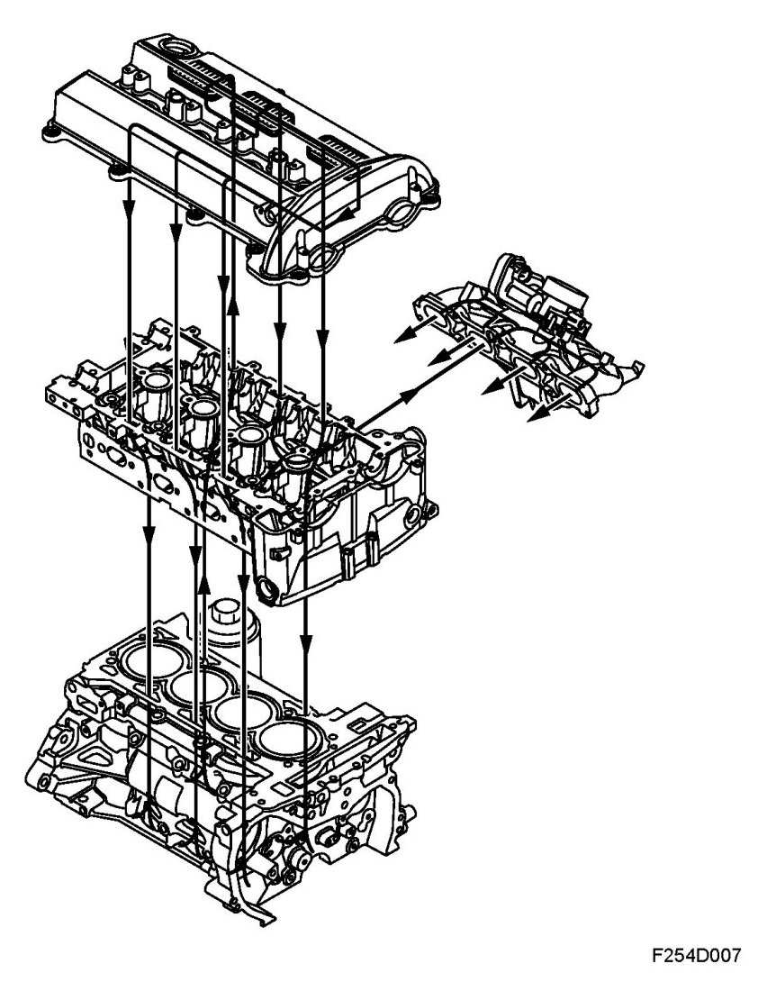
Function, high engine load
At high engine load, the pressure in the engine intake manifold is relatively high. There is therefore no reduced pressure which can draw the crankcase gases into the intake manifold. The check valve in this case is closed. The crankcase gases are passed from the oil trap via a hose to the turbo inlet, where reduced pressure predominates. Here the crankcase gases are mixed with the turbo intake air and passed to the engine cylinders via the engine intake manifold.
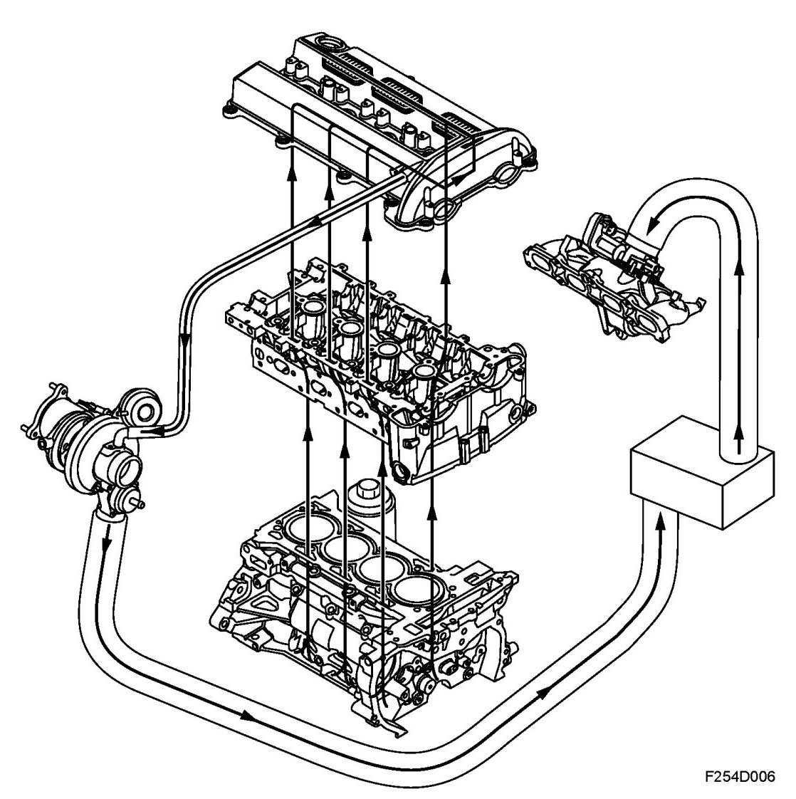
Evaporative emission system
General
Hydrocarbons from fuel evaporation in the fuel tank are passed through a pipe to a carbon filter and stored there. The fuel vapors are drawn through the evap canister purge valve into the engine and burned. The purge valve is controlled by the engine control module and the flow adjusted so that it always accounts for a specific proportion of the total flow which is consumed by the engine.
For further information on the purge valve and its control system, see Trionic T8.
Evaporative emission canister
The evaporative emission canister consists of a container filled with active charcoal, the purpose of which is to store temporarily the fuel vapors from the tank. The container has connections for an inlet from the tank and an outlet to the purge valve, and there is also a fresh air opening. Air is drawn in through the opening via the active charcoal to the intake manifold.
To prevent carbon powder penetrating the evap canister purge valve and causing a leak, the evaporative emission canister has a fine-mesh sieve in the upper part.
Emptying the evaporative emission canister
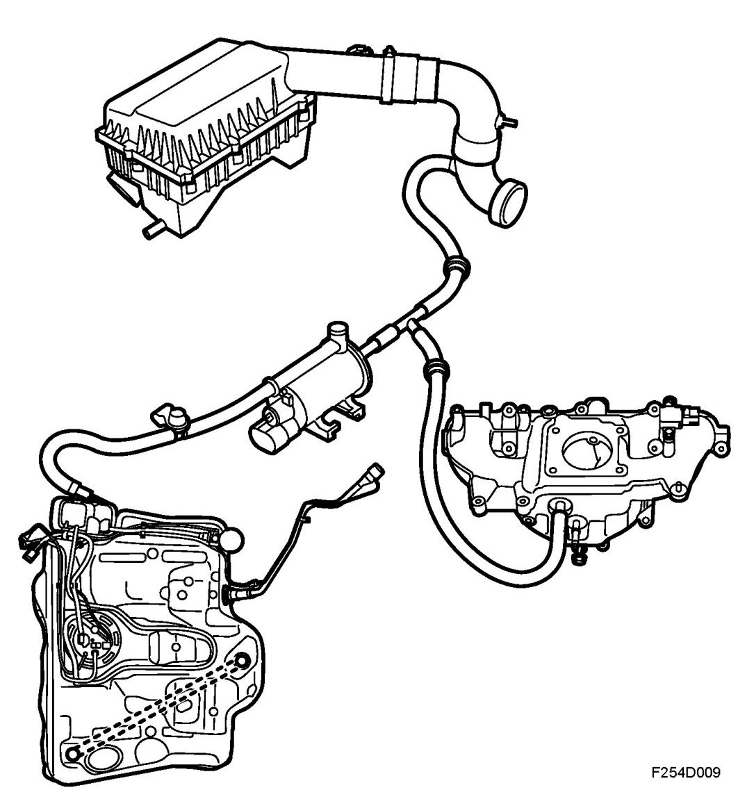
When the engine is started, ambient air is drawn through the evaporative emission canister via the purge valve and a check valve into the intake manifold. The fuel vapors follow and are burned in the engine. To prevent flow in the wrong direction, a check valve is included in the system.
Catalytic converter
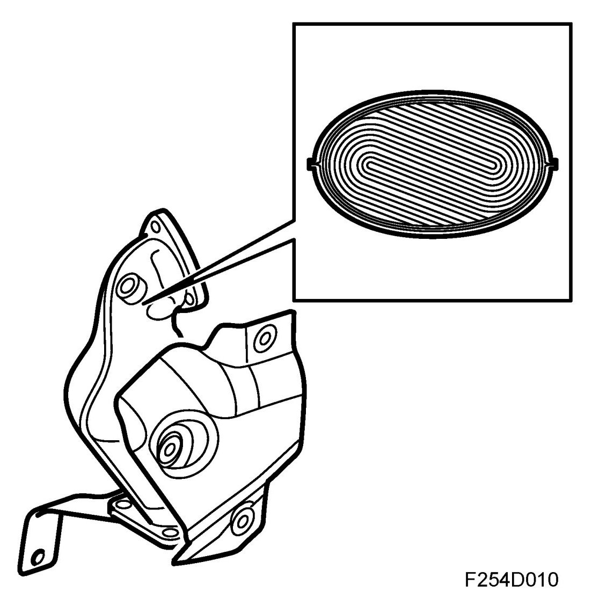
The catalytic converter consists of a ceramic carrier coated with a porous layer containing the catalytic materials rhodium and platinum.
The catalytic converter has a high conversion rate within a very narrow range. If the fuel-air mixture is not kept within this range, one or more gases will inevitably exceed the permitted values. A closed loop fuel injection system guarantees that the fuel-air mixture remains correct.
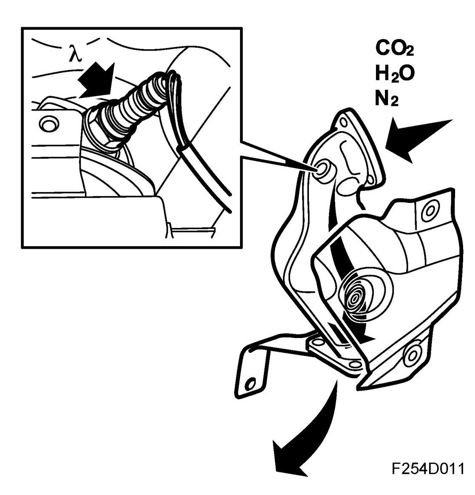
Assuming that the closed loop fuel injection system gives optimum fuel-air mixture conditions, the catalytic converter reduces nitrous oxides (NOx) and oxidises carbon monoxide (CO) and hydrocarbons (HC). The end products are carbon dioxide (CO2), water (H2O) and nitrogen (N2).
The condition for a catalytic converter to reduce emissions is that a car is only filled with lead-free petrol. This is because lead will destroy the active elements of the catalytic converter.
Catalytic converter, US/CA
The car is equipped with a catalytic converter system comprising two catalytic converters connected in series. The aim of this is to reduce emissions, primarily with cold starting. The first catalytic converter (pre-catalytic converter) is located close to the turbocharger intake, where the exhaust gases are as hot as possible.
During cold starting it is important to reach operating temperature in the catalytic converter as quickly as possible. Locating it close to the turbocharger intake means that the exhaust gases cannot cool appreciably before they reach the catalytic converter.
In order to further increase purification capacity the car is equipped with a second catalytic converter (main catalytic converter).
The catalytic converters consist of a ceramic carrier that is coated with a porous layer which contains the catalytic materials rhodium, platinum and palladium. The cermet is housed in a double sheathed steel casing.
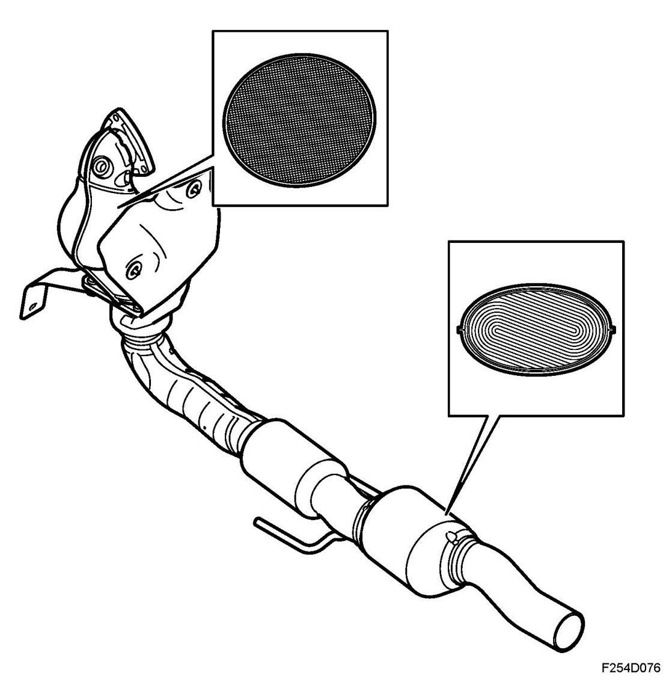
The catalytic converter has a high conversion rate on condition that the air-fuel mixture is stoichiometric, lambda 1. For petrol the ratio for lambda 1 that the air fuel must maintain is 14.7:1. If the air-fuel mixture is not maintained within this range then one or more gases will inevitably exceed the permitted values. A lambda controlled fuel injection system is a guarantee that the fuel-air mixture is completely correct. Normally slightly better emissions are obtained at lambda 0.99, accordingly slightly richer than lambda 1.
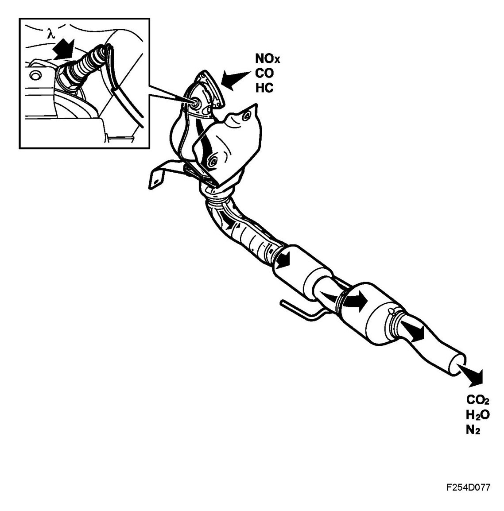
Assuming that the closed loop fuel injection system gives optimum fuel-air mixture ratios, the catalytic converter reduces nitrous oxides (NOx) and oxidises carbon monoxide (CO) and hydrocarbons (HC). The end products are carbon dioxide (CO2), water (H2O) and nitrogen (N2).
The condition for a catalytic converter to reduce emissions is that a car is only filled with lead-free petrol. This is because lead will destroy the active elements of the catalytic converter.
Secondary air injection
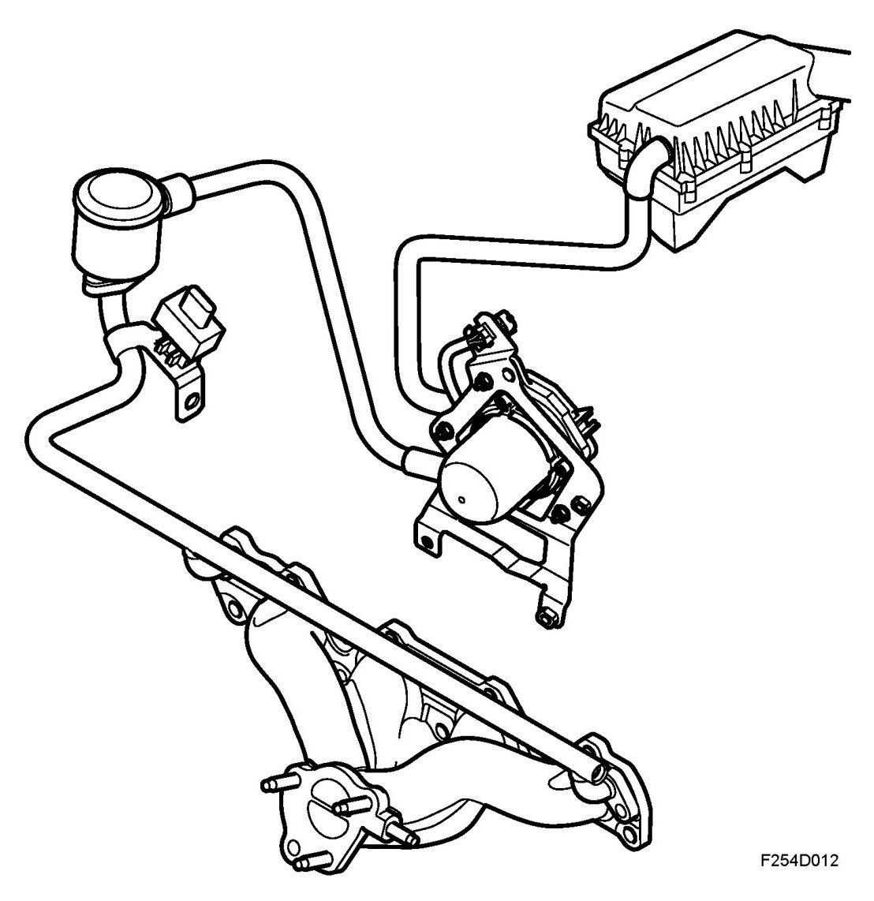
In order to get the catalytic converters working as quickly as possible after a cold start, thereby improving emission values, ambient air is pumped into the front exhaust manifold with the help of a secondary air pump.
There, the oxygen in the air together with CO and HC contaminants starts a chemical reaction that generates heat. The air is directed through a pipe system to the exhaust manifold, which distributes the air to the exhaust ports. The air travels via short ducts into the cylinder heads. These ducts open into the exhaust ports.
Additional fuel is supplied to compensate for the extra air. This additional fuel is added to the normally calculated fuel quantity. ECM calculates the extra quantity of fuel using a matrix. To further increase heat generation, ignition timing is delayed, approximately 8-10 degrees C after TDC.
The secondary air pump starts upon engine start provided that the charge air temperature and coolant temperature are within their limit values. The engine goes through a number of combustions before the secondary air pump starts. This delay is due to coolant temperature.
After the system stops requesting the secondary air pump, it continues to run for another few combustions to prevent unnecessary hydrocarbon emissions after function deactivation. To prevent exhaust leakage out the back through the secondary air system, the system has a check valve. Air is allowed to flow from the secondary air pump to the exhaust manifold, but exhaust gases are not allowed to flow towards the pump.
A pressure sensor has been introduced for diagnostic purposes.
Closed loop fuel injection system.
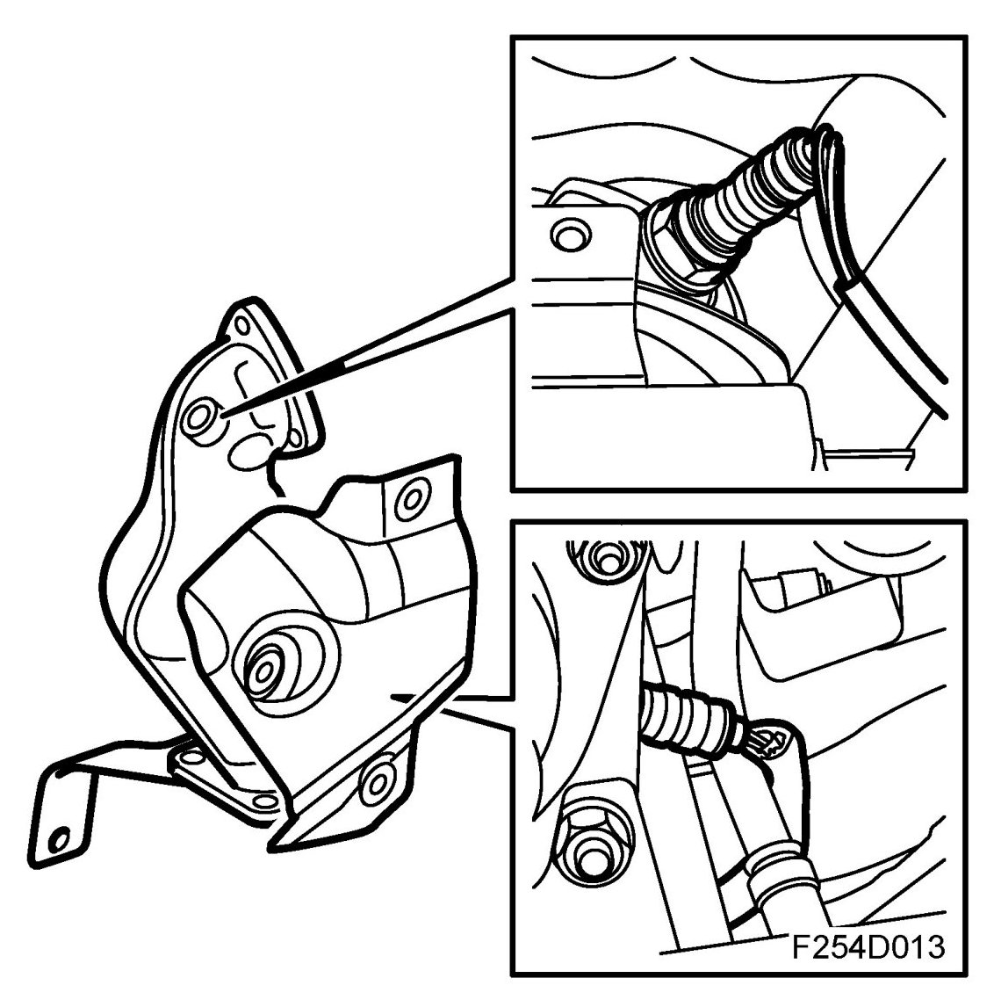
General
The system is regulated electronically by two oxygen sensors placed in the exhaust pipe before and after the catalytic converter. The car has a catalytic converter which contains an insert made of ceramic. The insert walls are coated with a catalytic material, platinum and rhodium. The catalytic converter has a high conversion rate within a very narrow range. If the fuel-air mixture is not kept within this range, called lambda 1, one or more gases will inevitably exceed the permitted values. A closed loop fuel injection system guarantees that the fuel-air mixture always remains correct.
Assuming that the closed loop fuel injection system gives optimum fuel-air mixture conditions, where the carbon monoxide (CO) and hydrocarbons (HC) are oxidised, the catalytic converter can also reduce the quantity of nitrous oxides (NOx). The end products are carbon dioxide (CO2), water (H2O) and nitrogen (N2). The condition for a catalytic converter to reduce emissions is that a car is only filled with lead-free petrol. This is because lead will destroy the active elements of the catalytic converter.
Oxygen sensor
The oxygen sensor consists of a primary cell with fixed electrolyte. The electrolyte is ceramic (zirconium dioxide (ZrO2)) and its temperature is stabilized through the addition of a small amount of yttrium oxide (Y2O3). The electrolyte is structured like a long and narrow disc.
To function well, the catalytic converter needs an air/fuel ratio of precisely 14.7:1.
When the engine runs lean, the oxygen content in the exhaust gases increases and the oxygen sensor output voltage is then around 0.1 V (lambda over 1). The engine control module responds by extending the injection time.
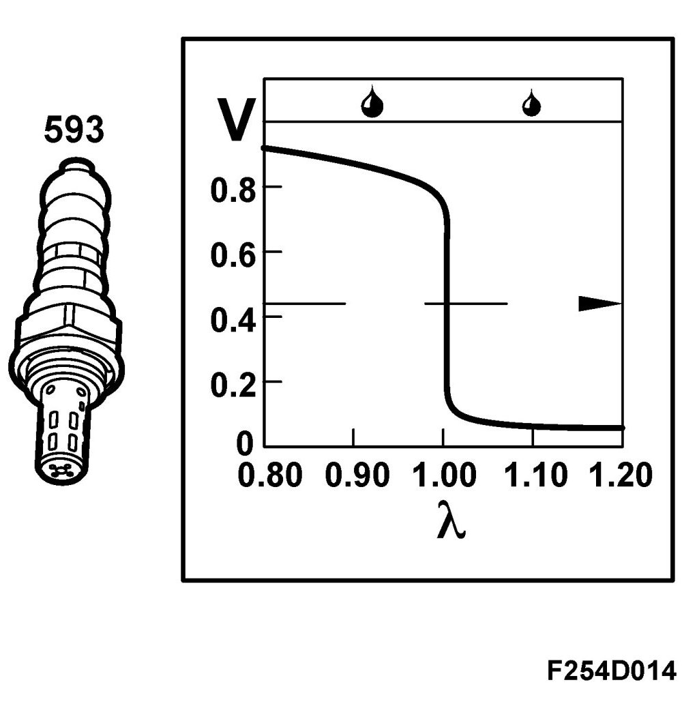
When the engine runs rich, the oxygen sensor output voltage is around 0.9 V (lambda under 1) and the injection pulses are shortened.
The working range of the oxygen sensor is between 200 degrees C and 850 degrees C (392 degrees F - 1562 degrees F) and it is therefore fitted with electric preheating. The preheating is controlled by the system control module. At high load and high engine speed, the exhaust gas temperature is high and preheating is disconnected.
For further information on the closed loop system see Group 2 "Engine control system".